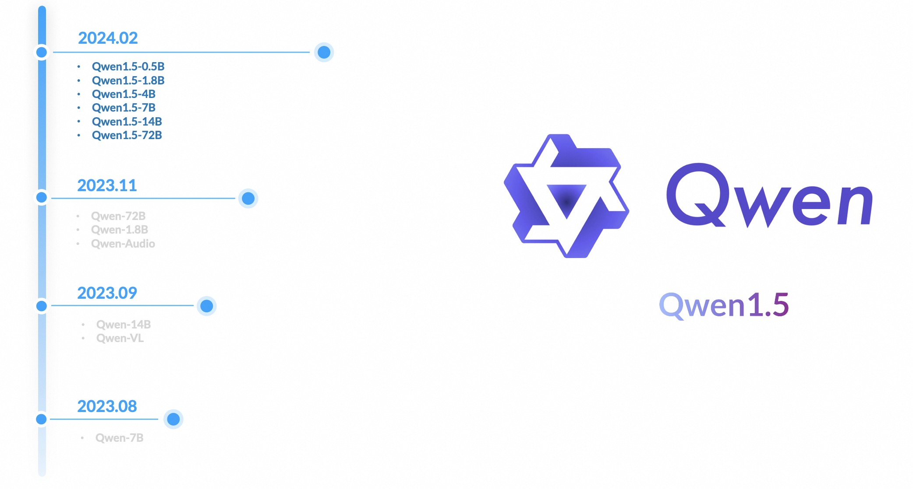
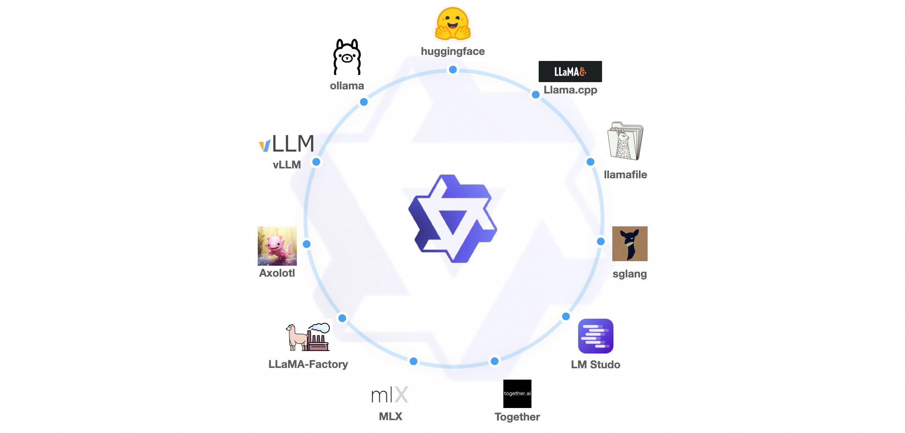
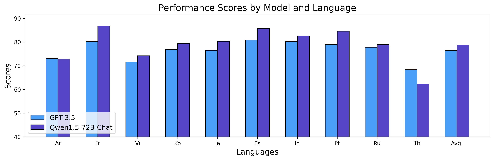

Qwen1.5 — 从单个模型走向完整开放家族

家族与工程栈
| 项目 | 官方发布内容 | 我的判断 |
|---|---|---|
| 尺寸 | 0.5B、1.8B、4B、7B、14B、32B、72B，并提供 MoE | 统一训练范式首次覆盖完整部署梯度 |
| 上下文 | 多数模型 32K | 长上下文从旗舰特性下沉到家族能力 |
| 推理格式 | BF16、GPTQ、AWQ、GGUF | 把“能下载”升级为“能在真实硬件跑” |
| 生态 | Transformers 4.37 起原生支持，无需 trust_remote_code | 大幅降低集成风险与维护成本 |
训练与能力变化
Qwen1.5 延续 decoder-only Transformer 路线，重点是训练数据、多语言、对话对齐与稳定性。官方对比图显示它在同尺度上对 Qwen 前代形成稳定提升；更重要的是，小模型不再只是压缩展示，而是被当作真实交付对象。


对 Agent Training 的意义
- 同一家族可以为 planner、executor、critic 选择不同尺寸，降低多模型工作流成本；
- 量化和标准 Transformers 接口让离线 rollout、私有工具环境和本地 verifier 更易部署；
- 32K 上下文提高了工具说明、历史轨迹和检索证据共同进入 prompt 的空间。
但官方发布页没有披露专门的长程工具 RL、轨迹级偏好优化或环境交互训练，不能把“支持 function calling”写成“已经解决 Agent 训练”。
资料充分度与边界
一手资料
- Qwen1.5 官方发布博客
- Qwen1.5-72B Hugging Face model card
- 本地 Hugging Face 模型卡 MD
- 本地来源索引